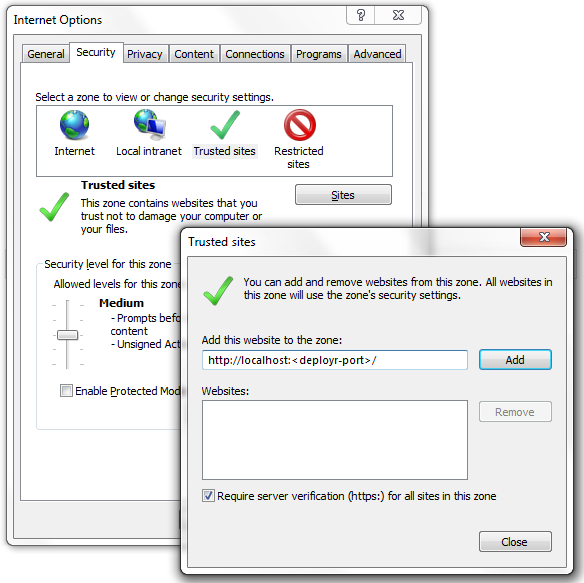
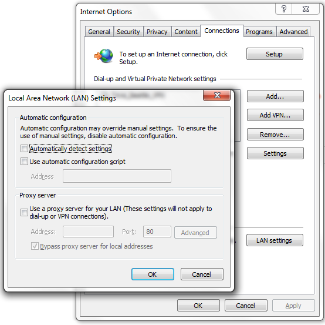

Introduction
This document describes how to run and interpret the DeployR diagnostic test. Additionally, this document offers solutions to issues that you might be troubleshooting after installing or during your use of DeployR.
Diagnostic Testing
You can assess the state and health of your DeployR environment by running the diagnostic test described in this document. The diagnostic script:
Outputs basic details about your environment
Identifies unresponsive components, such as the server, grid nodes, or the database
Gathers all relevant log and configuration files
Armed with this information, you will be able to investigate and resolve most issues. And, in the event that you need additional support, you can send the diagnostics tar/zip file to the Microsoft Corporation technical support team.
Behind the scenes, the script evaluates the system and creates the logs subdirectory to store:
The resulting log file (
diagnostics.log), which provides details, including the state of all components, plus pertinent configuration and environment information.Copies of each log and configuration file
The results are also printed to the screen.
Running the Diagnostic Check
There are two ways to run the diagnostic tests:
- The easiest way to run diagnostics is to launch it from the Diagnostics tab on the DeployR landing page.
After installing DeployR 8.1.0 and setting the password for the
adminuser account, you can log into the DeployR landing page. The landing page is accessible athttp://<DEPLOYR_SERVER_IP>:8100/deployr/landing, where<DEPLOYR_SERVER_IP>is the IP address of the DeployR main server machine.
However, if you cannot reach the landing page, the
admincan log into the server and manually run it using the following commands:Note: If the server log,catalina.out, contains information you do not wish to share with technical support, you can exclude that file. To do so, add--exclude-server-log, such as:./diagnostics.sh --exclude-server-logcd $DEPLOYR_HOME/deployr/diagnostics ./diagnostics.shAll output from the diagnostic test are stored in the
logssubdirectory as well as bundled intodiagnostics.tar.gz.Note: If the server log,catalina.[YYYY-MM-DD].log, contains information you do not wish to share with technical support, you can exclude that file. To do so, add--exclude-server-log, such as:diagnostics.bat --exclude-server-logcd C:\Program Files\Microsoft\DeployR\8.1\deployr\diagnostics diagnostics.batAll output from the diagnostic test are stored in the
logssubdirectory as well as bundled intodiagnostics.zip.
Inspecting Diagnostic Log Files
A copy of the following log and configuration files are bundled together during the diagnostic check. Review the log and configuration files for any component that was identified as experiencing issues.
The following log files can be found in the resulting diagnostics.tar.gz file as well as under $DEPLOYR_HOME/deployr/diagnostics/logs directly on the DeployR host.
| Component | Log & Config Files | Description |
|---|---|---|
| Diagnostic Results | diagnostics.log |
The DeployR diagnostic log provides details, including the state of all components, plus pertinent configuration and environment information. |
| DeployR | deployr.groovycatalina.out |
deployr.groovy is the DeployR external configuration file. Tomcat's catalina.out serves as the main DeployR log. Learn more about this file. |
| Tomcat | catalina.outcatalina.shlocalhost_access_log.[DATE].txtserver.xml |
The log and configuration files for Tomcat. |
| RServe | Rserv.confRserv-localhost.log |
The log and configuration files for RServe. DeployR Enterprise Only: The RServe files for remote grid nodes are not bundled. If you suspect an issue on a node, please log onto that machine to retrieve its RServe log file. |
The following log files can be found in the resulting diagnostics.zip file as well as under C:\Program Files\Microsoft\DeployR\8.1\deployr\diagnostics\logs directly on the DeployR host.
| Component | Log & Config Files | Description |
|---|---|---|
| Diagnostic Results | diagnostics.log |
The DeployR diagnostic log provides details, including the state of all components, plus pertinent configuration and environment information. |
| DeployR | deployr.groovyStacktrace.logcatalina.out |
deployr.groovy is the DeployR external configuration file. Tomcat's catalina.out serves as the main DeployR log. Learn more about this file. |
| Tomcat | catalina.outlocalhost_access_log.[DATE].txtserver.xml |
The log and configuration files for Tomcat. |
| RServe | Rserv.cfg |
The configuration file for RServe. The IP address is added to the filename for your convenience. DeployR Enterprise Only: The RServe files for remote grid nodes are not bundled. If you suspect an issue on a node, please log onto that machine to retrieve its RServe log file. |
Resolving Issues
Use the following instructions if you have run the diagnostic test and a problem was indicated.
To resolve component issues:
Look through the log and configuration files for each component that was identified in the diagnostic report.
If the log file indicates an error, then fix it.
If Server Web Context points to the wrong IP, update it now.
Set the DeployR server Web context to the external Public IP or else you will not be able to access to the DeployR landing page or other DeployR components after installation and be sure the automatic detection of IP address: (Setup: Azure | AWS ).
Open DeployR ports
8100,8101, and8106: (Setup: Azure | AWS ).
After making your corrections, restart the component in question. It may take a few minutes for a component to restart.
Run the diagnostic test again to make sure all is running smoothly now.
If problem persists:
After trying the first time, repeat steps 1-4.
Review the other Troubleshooting topics.
Post your questions to our DeployR Forum.
After the second time, send the diagnostics tar/zip file to the Microsoft Corporation technical support team.
Troubleshooting
This section contains pointers to help you troubleshoot some problems that can occur with DeployR.
Landing Page Cannot Be Reached
If you cannot access the DeployR landing page or if the landing page looks disabled and you can't log in, we recommend that you first verify that the server is, in fact, running using this diagnostic test. If the diagnostic logs reveal nothing and the DeployR landing page still isn't loading properly, then it is likely that the IP address in the Server Web Context is incorrectly defined. For more on the Server Web Context, refer to the Administration Console Help.
This problem can arise for various reasons, including:
When an internal IP address was automatically assigned instead of an external address. This is most common with Azure or an Amazon Web Services (AWS) EC2 instances, but can occur with other configurations.
When the underlying IP address of your DeployR server has changed. This is most common when you have installed the DeployR server on a portable laptop and have since changed networks (for example, between your office and your home).
To fix this issue, run the setWebContext script to update the IP address in the DeployR Server Web Context.
Usage tips for the setWebContext script arguments:
- Use
-queryto see which IP is currently defined as the Server Web Context. - Use
-awsto detect the external IP used for your AWS EC2 instance. From there you can choose to use that IP as the DeployR Server Web Context. - Use
-ip <ip_address>to specify a new IP address or DNS name for the DeployR Server Web Context. - Use
-disableautoto turn off the automatic IP detection. You can turn this back on in the Administration Console. - Use
-https true|falseto enable or disable HTTPS in the server policies, including the Server Web Context. This change requires other changes to complete SSL/HTTPS process as described in these instructions.
To update the IP address specified for the Server Web Context:
Run the
setWebContext.shscript with the appropriate arguments (see preceding table):/home/deployr-user/deployr/8.1.0/deployr/tools/setWebContext.sh -query|-aws|-ip <ip_address>For this change to take effect restart the DeployR services. Between stopping and starting, be sure to pause long enough for the Tomcat process to terminate.
Open a Command Window with “Run as Administrator”.
Run the
setWebContext.batscript with the appropriate arguments (see preceding table):C:\Program Files\Microsoft\DeployR\8.1\deployr\tools\setWebContext.bat -query|-aws|-ip <ip_address>For this change to take effect restart the DeployR services. Between stopping and starting, be sure to pause long enough for the Tomcat process to terminate.
Landing Page Blocked in I.E. 11
If you are attempting to access the DeployR landing page using http://localhost:8100/deployr/landing in Internet Explorer (I.E.) 11 and the diagnostic tests have turned up nothing, you may find that the landing page is blocked. This may be due to some default settings in I.E. 11.
To solve this issue:
In Internet Explorer 11, go to the Security tab in the Internet Options dialog box.
Add
http://localhost:8100/deployrto the Trusted Sites list.In the Connections tab in the same Internet Options dialog box, click LAN settings.
Deselect the Automatically detect settings checkbox to enable custom entries in the HOSTS file.
Click OK to apply the changes.
Cannot Access DeployR
During the installation of DeployR on Windows, the 'Domain' profile is used to create inbound exceptions for the ports used by DeployR. These settings may need to be adjusted after installing to meet the needs of your deployment.
Multiple User Sign-ins
You cannot log into DeployR from two different accounts within the same brand of browser program. To use two or more different accounts, you'll need to log into each one in a separate brand of browser.
For example, to log into the DeployR Administration Console with admin account and into the API explorer tool with another user account, open one in Google Chrome™ and the other in Mozilla® Firefox®.
Issues After Reinstalling Microsoft R or R
If you want to upgrade or reinstall R, Microsoft R Services, or Revolution R Open, then follow these instructions precisely.
However, if you upgraded or reinstalled and are now having issues, see below.
For DeployR Enterprise
If the issue is that Rserve is not running on a machine, then you'll need to restart it.
Try the following:
- Run the diagnostics to determine whether the issue is on the main server or a grid node.
- Make sure there is no activity on the DeployR grid.
- Stop DeployR on the machine in question.
- Attempt to correct all issues reported in the diagnostics log.
- Start DeployR on the machine in question.
- Run the diagnostics again.
In the event that you need additional support, send the diagnostics tar/zip file to the Microsoft Corporation technical support team.
IfMicrosoft R Services, Revolution R Open, or R is not reinstalled as described at the beginning of this document, then Rserve may be missing.
Try the following:
- Run the diagnostics to determine whether the issue is on the main server or a grid node.
- If RServe is not running and you cannot find it in the
\bin\x64subdirectory of the Microsoft R Services install directory, then you must reinstall as described here. - If there are other issues reported in the diagnostics log, attempt to fix them now.
- Run the diagnostics again.
In the event that you need additional support, send the diagnostics tar/zip file to the Microsoft Corporation technical support team.
For DeployR Open
If the issue is that Rserve is not running on a machine, then you'll need to restart it.
Try the following:
- Run the diagnostics to confirm Rserve is not running.
- Make sure there is no activity on the DeployR grid.
- Stop DeployR.
- Attempt to correct all issues reported in the diagnostics log.
- Start DeployR.
- Run the diagnostics again.
In the event that you need additional support and have purchased a support agreement, send the diagnostics tar/zip file to the Microsoft Corporation technical support team.
If Revolution R Open or CRAN R is not reinstalled as described at the beginning of this document, then Rserve may be missing.
Try the following:
- Run the diagnostics to confirm RServe is missing.
- If RServe is not running and you cannot find it in the
\bin\x64subdirectory of the Revolution R Open or R install directory, then you must reinstall as described here. - If RServe is present and running, and there are other issues reported in the diagnostics log, attempt to fix them now.
- Run the diagnostics again.
In the event that you need additional support and have purchased a support agreement, send the diagnostics tar/zip file to the Microsoft Corporation technical support team.
Upping R Session Memory Limits
By default, the maximum memory available to an R session under DeployR on Windows Rserve is 2 GB. If this is insufficient for your purposes, then you can increase the memory allocated for your R sessions by executing the memory.limit() R function on the R session. This function allows you to specify a higher memory allocation for your R session. The size parameter on that function call determines the final memory allocation for the R session. In general:
memory.limit(size = <MAX_MEM_LIMIT>)It is often convenient to add this function call to the start of any R script that requires runtime memory resources in excess of the default 2 GB on Windows.
For example, the following line will raise the maximum memory limit to 10 GB for your R session:
memory.limit(size = 10240)- The increase in the memory allocation takes place only once the line is executed.
- The memory allocated during a session can only be increased, and not decreased.
- The value for
memory.limitis not applied system wide. Instead, it applies only to the R session where thememory.limitfunction has been executed.
Access Denied to Tomcat (Windows)
If you reboot after installing and get an access error message for Tomcat, you can specify that Tomcat should be run “as an administrator” to stop the message from appearing. The error is related to tomcat7w.exe, which is an application for monitoring and configuring Tomcat services. The error message is: “Access is denied. Unable to open the service Tomcat”
To set Tomcat program to run as an administrator, do the following:
Right-click
tomcat7w.exeand choose Properties from the shortcut menu.tomcat7w.exeis a GUI application for monitoring and configuring Tomcat services.In the Properties dialog, select the checkbox Run this program as an administrator checkbox in the Privilege Level area.
Click OK.
Launch DeployR again.
Inactive Grid Node (Windows 7)
If the DeployR Default Node appears Inactive in the DeployR landing page directly after having installed DeployR on a Windows 7 machine, then the R_HOME variable may not be set.
To correct this issue:
Check the status of the DeployR Default Node in the DeployR landing page at
http://<DEPLOYR_SERVER_IP>:8100/deployr/landing. If it appears Inactive, continue to the next step.Verify the status of RServe8.0 in the Services dialog box. If it appears as
Started, continue to the next step. If not, start it now and go back to step 1.
Tip: Go to Start > Control Panel. Search foradminand select Administrative Tools from the results. Choose Services to open the Services dialog box.At a DOS command prompt, go to the
bin\x64directory for R and start RServe. Pay particular attention to the messages printed to the window. For example:cd C:\Program Files\RRO\R-3.2.2\bin\x64 RServe8.0If you see the message "R_HOME must be set in the environment or Registry", then you must define that environment variable as follows:
- Go to Start > Control Panel.
- Search for
sysand select Edit the system environment variables from the results. - Click the Environment Variables... button to open the Environment Variables dialog box.
- Click New... and enter
R_HOMEas the Variable name and the path to R (such asC:\Program Files\RRO\R-3.2.2\) as the Variable value. - Click OK to create the variable.
Reboot your machine.
Go back to landing page and verify that the grid node is now active.
Cannot See API Explorer Tool
Ensure Adobe Flash Player is installed and configured to work with your browser.
Clear your browser’s cache before launching the API Explorer tool. This is particularly important if you are upgrading from a previous version of DeployR.
Changing Tomcat Port Numbers
If you run into conflicts with other applications, consider changing the port numbers. You only need to change the port numbers of those applications that are actively conflicting. Consequently, not all of the following steps may apply to your situation.
Edit the file
<DeployR_Install_Dir>/tomcat/tomcat7/conf/server.xml.Find the port number value by searching for
<Connector port=”8100”Replace the port value with a new, unique port number.
Save the file.
Restart Tomcat for the changes to take effect. At the prompt, type:
/home/deployr-user/deployr/8.1.0/tomcat/tomcat7.sh stop /home/deployr-user/deployr/8.1.0/tomcat/tomcat7.sh start- Verify that the port changes are working as expected. At the prompt, type:
netstat -p --listening --numeric-ports --numeric-hosts | grep -i java
In the C:\Program Files\Microsoft\DeployR\8.1\Apache_Tomcat directory, open the file server.xml.
Find: port=”8100”
Replace the port value with a new, unique port number.
Save the file.
Restart Tomcat for the changes to take effect.
net stop Apache-Tomcat-for-DeployR-8.1
net start Apache-Tomcat-for-DeployR-8.1